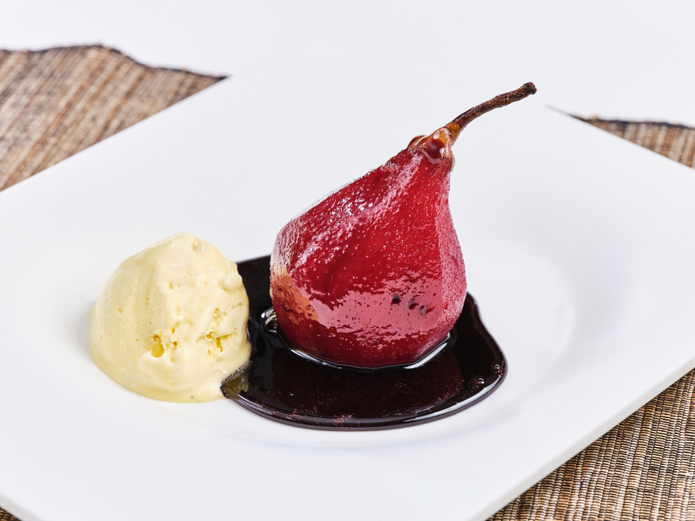

Recetas de Postres
Peras al Vino Tinto

Ingredientes:
- 4 peras maduras pero firmes
- 750 ml de vino tinto (1 botella)
- 200 g de azúcar
- 1 rama de canela
- 1 clavo de olor
- 1 trozo de cáscara de naranja
- 1 trozo de cáscara de limón
Preparación:
- Pelá las peras manteniéndoles el cabito. Podés dejarles la base para que se paren solas.
- En una cacerola, colocá el vino, el azúcar, la canela, el clavo y las cáscaras de cítricos.
- Llevá a fuego medio hasta que el azúcar se disuelva y el líquido comience a hervir.
- Agregá las peras y cocinalas a fuego bajo por 30–40 minutos, girándolas de vez en cuando para que se tiñan parejo.
- Retirá las peras, subí el fuego y reducí el líquido hasta que espese como un almíbar.
- Serví las peras tibias o frías con el almíbar por encima.
Tip: Podés acompañarlas con crema batida, helado de vainilla o nueces tostadas para sumar textura.